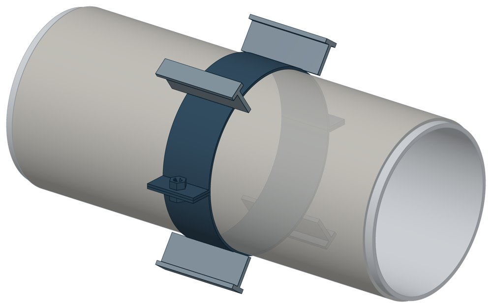

Хомутовые опоры СК 2410-94 в футлярах
Альбом СК 2410-94. Dн 108–1620 мм, масса 3,5–190,1 кг.

- Диаметр трубы Dн
- 108–1620 мм
- Документ
- Альбом СК 2410-94
- Исполнений
- 16
- Масса
- 3,5–190,1 кг
- 3D-модели
- у всех исполнений (условные: общий вид по габаритам)
Таблица исполнений СК 2410-94
| Обозначение | Код ПРОМБУРГ | Dнмм | Радиус Rмм | Высота полозьевмм | Длина Lмм | Массакг | 3D |
|---|---|---|---|---|---|---|---|
| М-1 СК2410-94-12 | ПБ-СК2410-0108-1 | 100 | 67 | 75 | 100 | 3,5 | 3D |
| М-1,5 СК2410-94-12 | ПБ-СК2410-0159-1 | 150 | 90 | 75 | 100 | 4,1 | 3D |
| М-2 СК2410-94-12 | ПБ-СК2410-0219-1 | 200 | 120 | 75 | 100 | 4,9 | 3D |
| М-2,5 СК2410-94-12 | ПБ-СК2410-0273-1 | 250 | 147 | 75 | 100 | 5,5 | 3D |
| М-3 СК2410-94-13 | ПБ-СК2410-0325-1 | 300 | 170 | 75 | 200 | 14,9 | 3D |
| М-3,5 СК2410-94-13 | ПБ-СК2410-0377-1 | 350 | 195 | 75 | 200 | 16,1 | 3D |
| М-4 СК2410-94-13 | ПБ-СК2410-0426-1 | 400 | 220 | 75 | 200 | 17,3 | 3D |
| М-5 СК2410-94-13 | ПБ-СК2410-0530-1 | 500 | 270 | 75 | 200 | 19,7 | 3D |
| М-6 СК2410-94-13 | ПБ-СК2410-0630-1 | 600 | 320 | 75 | 200 | 22,3 | 3D |
| М-7 СК2410-94-14 | ПБ-СК2410-0720-1 | 700 | 370 | 140 | 300 | 56,4 | 3D |
| М-8 СК2410-94-14 | ПБ-СК2410-0820-1 | 800 | 420 | 140 | 300 | 60,6 | 3D |
| М-9 СК2410-94-14 | ПБ-СК2410-0902-1 | 900 | 470 | 140 | 300 | 65,2 | 3D |
| М-10СК2410-94-14 | ПБ-СК2410-1020-1 | 1000 | 520 | 140 | 300 | 69,4 | 3D |
| М-12СК2410-94-15 | ПБ-СК2410-1220-1 | 1200 | 621 | 159 | 400 | 158,7 | 3D |
| М-14СК2410-94-15 | ПБ-СК2410-1420-1 | 1400 | 722 | 159 | 400 | 174,7 | 3D |
| М-16СК2410-94-15 | ПБ-СК2410-1620-1 | 1600 | 822 | 159 | 400 | 190,1 | 3D |
Чтобы заказать, сообщите обозначение и код ПРОМБУРГ: +7 (499) 325-51-35, promburg@yandex.ru.
Нормативные документы
- СК 2410-94 Конструкции прокладок подземных коммуникаций в стальных футлярах 1200 - 2000 мм методом продавливания. Материалы для проектирования — документ, по которому изготавливается изделие
Связанные позиции
- Соседний тип: СК 2109-92 — Хомутовые опоры СК 2109-92
Собрать узел с этим изделием
- Конструктор узла: собрать участок с компенсатором под свои данные труба, длина, среда, условия — состав узла и спецификация бесплатно
На трубу Dн 108–1620 мм в каталоге
Позиции каталога с исполнениями на те же наружные диаметры трубы.
Детали трубопровода
- Фланец стальной плоский приварной общих Dн: 14
- Отвод стальной крутоизогнутый 90° общих Dн: 13
- Фланец стальной воротниковый общих Dн: 13
- Отвод стальной крутоизогнутый 90°, 09Г2С общих Dн: 11
- Заглушка стальная эллиптическая общих Dн: 9
- Днище стальное эллиптическое общих Dн: 8
- Переход стальной концентрический общих Dн: 8
- Отвод нержавеющий 90° общих Dн: 1
Компенсаторы
- Компенсатор сильфонный 2ОПКР общих Dн: 14
- Компенсатор сильфонный 2ОПКР (ИЯНШ) 2ОПКРИ общих Dн: 14
- Компенсатор сильфонный 2СКУ.М 2СКУМ общих Dн: 14
- Компенсатор сильфонный 2СКУ.М (ИЯНШ) 2СКУМИ общих Dн: 14
- Компенсатор сильфонный КС общих Dн: 14
- Компенсатор сильфонный КСО (ИЯНШ) КСОИ общих Dн: 14
- Компенсатор сильфонный ОПКР общих Dн: 14
- Компенсатор сильфонный ОПКР (ИЯНШ) ОПКРИ общих Dн: 14
- Компенсатор сильфонный сейсмический общих Dн: 14
- Компенсатор сильфонный стартовый СК общих Dн: 14
- Компенсатор сильфонный СКУ.М СКУМ общих Dн: 14
- Компенсатор сильфонный СКУ.М (ИЯНШ) СКУМИ общих Dн: 14
- Компенсатор сильфонный 2СКУ.ППМ (ИЯНШ) 2СКУППМИ общих Dн: 13
- Компенсатор сильфонный 2СКУ.ППУ (ИЯНШ) 2СКУППУИ общих Dн: 13
И ещё 20 типов — в оглавлении каталога.
Другие опоры и подвески
- Опоры приварные неподвижные скользящие ОПН общих Dн: 15
- Опоры сварные скользящие неподвижные и направляющие СТО 79814898-130 общих Dн: 15
- Опора приварная скользящая и неподвижная ОСТ 34-10-616-93 общих Dн: 15
- Опоры хомутовые скользящие ОСТ 34-10-617-93 общих Dн: 15
- Опоры хомутовые неподвижные ОСТ 34-10-618-93 общих Dн: 15
- Опоры скользящие неподвижные ОСТ 34-10-623-93 общих Dн: 15
- Блок подвески с опорной балкой ОСТ 34-10-726-93 общих Dн: 15
- Опора неподвижная двухупорная ТС-660 общих Dн: 14
- Опора неподвижная щитовая ТС-666 общих Dн: 14
- Опора скользящая хомутовая ТС-626 общих Dн: 14
И ещё 96 типов — в оглавлении каталога.
Другие типы раздела
Хомутовые скользящие опоры (ТС-730…ТС-748, 313 ТС, СК)
- Опоры хомутовые подвижные 313 ТС
- Опоры хомутовые подвижные 313 ТС в футляре
- Хомутовые опоры СК 2109-92
- Опоры скользящие хомутовые диэлектрические ТС-732
- Опоры хомутовые скользящие ТС-733
- Опоры хомутовые скользящие ТС-734
- Опоры хомутовые ТС-748
Частые вопросы
Чем неподвижная опора отличается от подвижной?
Неподвижная закрепляет трубу в одной точке и принимает усилия от температурного расширения, давления и трения. Подвижная держит вес трубы и даёт ей перемещаться при нагреве. Неподвижные делят трассу на участки компенсации, подвижные стоят между ними. Место и тип каждой опоры задаёт проект.
Скользящая или катковая опора?
По СП 124.13330.2012 (п. 10.34) скользящие опоры применяют при всех способах прокладки и для всех диаметров труб. Катковые — для труб диаметром 200 мм и более при осевом перемещении, при прокладке в тоннелях, на кронштейнах, на отдельно стоящих опорах и эстакадах. Катковая опора снижает силу трения, которая передаётся на неподвижные опоры.
На каком расстоянии ставить опоры?
По СП 124.13330.2012 (п. 10.5) максимальные расстояния между подвижными опорами на прямых участках определяют расчётом на прочность и по допускаемому прогибу. Готового шага «по диаметру» норматив не даёт: пролёт задаёт проект.
По какому диаметру подбирать — Dн или Ду?
По наружному диаметру трубы Dн: именно он стоит в таблицах серии. Ду — условный проход, округлённая величина: Ду 100 соответствует Dн 108. В заявке указывайте Dн и толщину стенки трубы.
Из какой стали изготавливаются опоры?
По рабочим чертежам серии листовые детали — Ст3сп5 ГОСТ 14637-89, хомуты из круга — сталь 20 ГОСТ 1050-88. Для районов с низкой расчётной температурой воздуха применяется низколегированная сталь, в том числе 09Г2С; размеры опор при этом не меняются. В заявке укажите расчётную температуру наружного воздуха.
Что указать в заявке, чтобы получить цену без уточнений?
Обозначение с номером исполнения или код ПБ, количество, Dн и стенку трубы, расчётную температуру наружного воздуха, покрытие, город доставки и желаемый срок. Кнопка «В заявку» в таблице собирает спецификацию, которую можно выгрузить в Excel или отправить письмом.